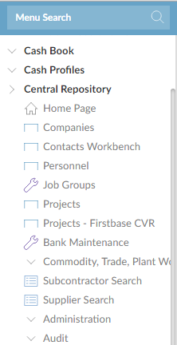
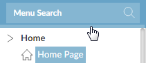

signs and then click on the function you want. You can collapse all the menu trees by clicking the area below the menu search.
signs and then click on the function you want. You can collapse all the menu trees by clicking the area below the menu search.The

The tree displays the functions available for that module. Expand the tree by clicking on the signs and then click on the function you want. You can collapse all the menu trees by clicking the area below the menu search.

You can hide the main menu by:
If the main menu is hidden, you can display it briefly - for example so you can select a different function. Click the border between the menu and the main area (anywhere above or below the middle section); the menu stays open as long as the mouse pointer is over it. When you move the pointer away from the menu, it closes.
To bring the main menu back, click on the Show Menu button:  , click the middle of the left hand border of the screen, or press Ctrl+Shift+<.
, click the middle of the left hand border of the screen, or press Ctrl+Shift+<.